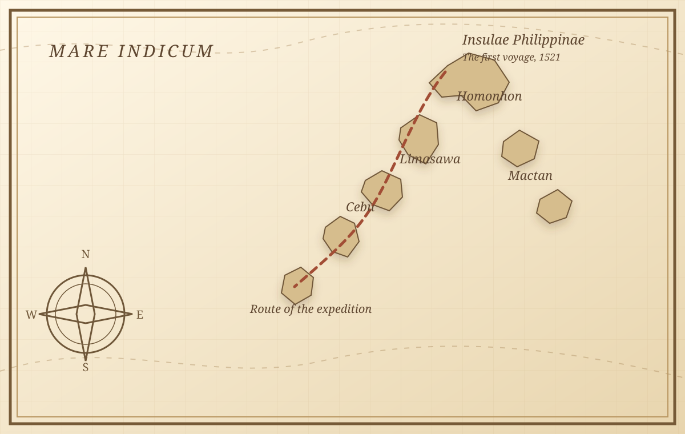

Daily Life and Customs
Pintados, feasts, and social roles recorded through an outsider's eyes.
Digital Historical Archive 1519 to 1522
Reading a 16th-century eyewitness account of society, language, and trade in the early Philippines.
In 1521, Antonio Pigafetta, an Italian from Vicenza, sailed with Ferdinand Magellan and reached islands he called Islas de San Lázaro. His account is among the earliest written European descriptions of the Philippines, and it offers a rare window into a society already connected to wider maritime worlds.

Archival Reference: Codex Ambrosianus Folio 42rA route remembered through surviving notes, coastal encounters, and the geography of the first voyage.
01, Introduction
Antonio Pigafetta (c. 1491 to c. 1534) was a Venetian nobleman from Vicenza who joined Ferdinand Magellan's expedition as a literate passenger and careful eyewitness.1
He survived the voyage, including the Battle of Mactan, and returned to Europe with notes that became the most sustained account of the expedition. His writing gives us unusually close glimpses of the people, languages, ceremonies, and ports encountered in the islands.
His account, usually translated as The First Voyage Around the World (Relazione del primo viaggio intorno al mondo), survives in four manuscript codices.2 It is valuable precisely because it is both detailed and partial, shaped by what a 16th-century European traveler could see, understand, and put into words.
Pintados, feasts, and social roles recorded through an outsider's eyes.
Some of the earliest European records of Visayan words and everyday speech.
Porcelain, gold weight standards, and port diplomacy reveal a connected maritime world.
Here the voyage was briefly at peace, and the expedition met societies already well acquainted with ships, gold, and trade.
How to Read the Account
We begin with what Pigafetta saw, then compare it with other evidence before drawing conclusions about life in the early Philippines.
Part I Pigafetta's Notes
We start with the details he wrote down, such as coastlines, objects, tattoos, meals, meetings, and exchanges.
Part II His Point of View
Pigafetta was a 16th-century Italian nobleman and Catholic traveler. Language barriers and his habit of calling datus "kings" shaped what he wrote.
Part III Check Other Evidence
We compare his words with Song-Ming ceramics, the Butuan boats, Surigao gold, archaeological finds, and Portuguese accounts from the same period.
Part IV Put the Story Together
The voyage was not simply a story of European discovery. Local communities made choices, controlled ports, and took part in their own maritime world.
Field Notes Cebu, Homonhon & Palawan
Choose a topic to see what Pigafetta wrote, what it meant in its time, and why it still matters.
Location: Limasawa / Cebu April 1521
The islanders greeted the Spanish crew warmly, offered food and drink, and took part in peace agreements.
In early island culture, sharing a meal and gifts was standard diplomatic courtesy and a way to test if new visitors came in peace.
It shows that early Filipinos had well-established customs of hospitality and diplomacy long before Spanish rule.
04, Language and Vocabulary
Pigafetta tried to write down words he heard, including numbers and terms for food, drink, boats, and social roles. These are some of the earliest European records of languages spoken in the islands, but they need to be read carefully.
Historians value these lists because they preserve a snapshot of speech from 1521. But a European traveler's spelling cannot show exactly how every word sounded. Pigafetta heard many words only once and wrote them using the spelling habits of his own language. Some words resemble later Visayan words, while others are harder to identify. Their value is that they record an encounter and give researchers a starting point for comparison, not a complete picture of any language.
No entries match your search. Try a broader term.
Port Economy Archipelagic Commerce
Pigafetta documented an active regional trade network. Explore the goods exchanged in precolonial ports.
Mineral Wealth • Native Gold
What Pigafetta saw
Island leaders wore gold collars, rings, and armbands. Gold dust was weighed on small handheld scales when food was traded.
What it tells us
Gold was mined locally and used for adornment, exchange, and important gifts between leaders.
Local Philippine Mines Butuan, Surigao, CebuStaple Provisions • Rice
What Pigafetta saw
Communities provided large baskets of rice to help feed the European ships when their supplies were low.
What it tells us
Settled wet-rice farming produced enough food to support local communities and visiting crews.
Agricultural SurplusAromatics • Ginger and Cloves
What Pigafetta saw
He noted ginger, cinnamon, and other spices stored in ceramic jars, goods the fleet was eager to trade for.
What it tells us
The islands were linked to the regional spice routes that connected the Philippines with the Moluccas.
Regional Spice RoutesCoastal Livelihood • Tuba
What Pigafetta saw
Islanders tapped coconut and nipa palms, collecting sweet sap in bamboo tubes to drink fresh or fermented.
What it tells us
People had skilled ways to ferment drinks and make full use of the trees growing along the coast.
Coastal AgroforestryMaritime Technology • Balangay
What Pigafetta saw
Large plank-built sailing boats called balanghai carried local rowers and moved goods between islands.
What it tells us
Indigenous boatbuilders had the skills needed for long-distance travel and inter-island trade.
Inter-Island Sea TradeForeign Imports • China Trade
What Pigafetta saw
Chiefs served food on porcelain platters and wore imported Chinese silk, signs of older connections across the sea.
What it tells us
Trade with Ming China was already established before Magellan arrived, linking local ports to East Asian markets.
East Asian Maritime NetworkA maritime web, not a single route
Philippine ports sat within a changing sea of exchange, linked to several regional worlds at once.
Cebu, Butuan, and other coastal communities
Silk, porcelain, and trade ceramics
Language, diplomatic links, and textiles
Clove, nutmeg, and trading networks
Exhibit Conclusion Historical Verdict
His journal is not the complete truth of our history, but it is one of our earliest windows into it. Here is how historians evaluate his work.
The Value
Eyewitness details we would not have otherwise
Pigafetta recorded everyday names, food, Visayan words, and customs before Spanish colonization changed them. Without his notes, much of this written detail from 1521 would be lost to time.
Presentation point: It gives us raw evidence of our ancestors' culture.
The Critique
Understanding his biases and limits
He stayed only a short time, did not speak the local languages fluently, and viewed events as a European Catholic. He called local datus "kings" and misunderstood some babaylan rituals.
Presentation point: We cannot treat everything he wrote as absolute fact.
The Modern View
Reading beyond the Spanish story
Today, Filipino historians do not use Pigafetta to praise Spanish "discovery." They use his clues alongside ancient gold, pottery, and boat remains to show that the islands were organized, wealthy, and independent before his arrival.
Presentation point: Our history did not begin in 1521.
10, Sources and Evidence
This project uses Pigafetta's account, museum and library collections, and academic research. Each entry names its source type so readers can see where the information comes from.
Pigafetta's own account, in surviving manuscripts and reputable translations.
Museums, libraries, and cultural groups that preserve or explain related evidence.
Academic books and research used to explain the historical evidence.
The small footnote numbers and "Read more" notes point to these sources. When a statement is an interpretation rather than Pigafetta's own words, the exhibit says so.